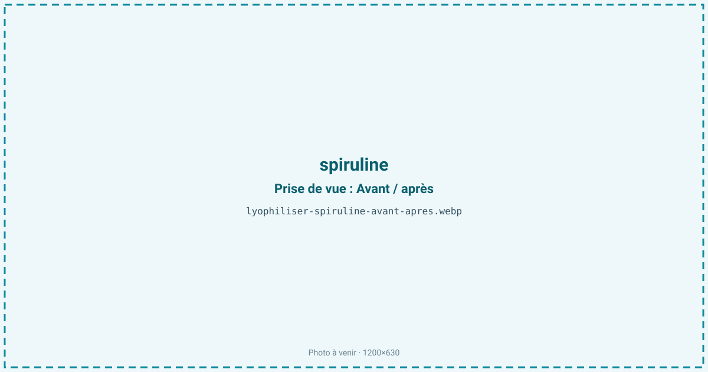
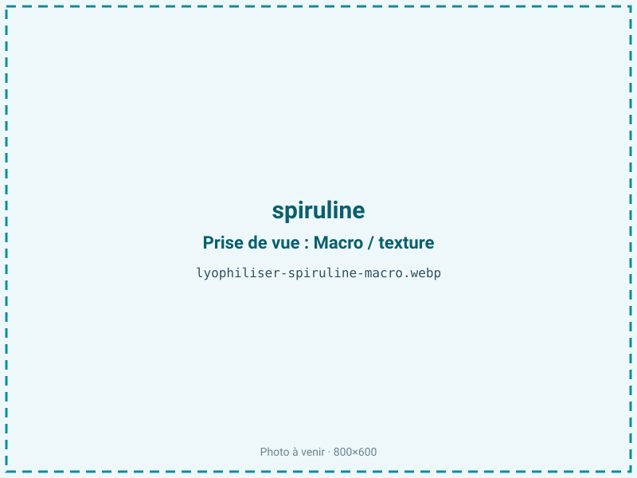
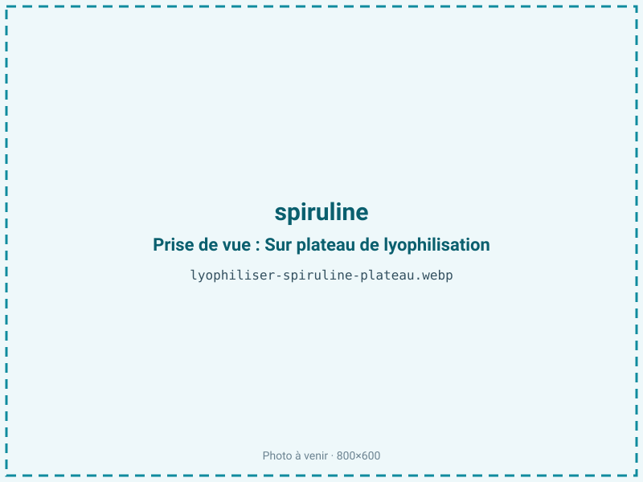
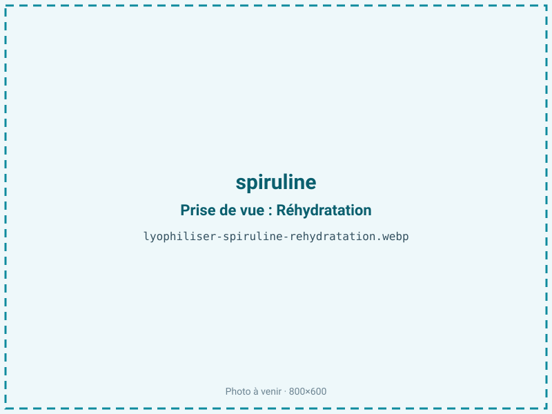

Lyophiliser de la spiruline
La spiruline fraîche est un produit vivant très instable qui doit être séché pour se conserver. La lyophilisation retient sa phycocyanine bleue, ses protéines et ses acides gras fragiles bien mieux que le séchage à chaud, au prix d'un procédé plus lent. Un ingrédient premium pour compléments et colorants naturels.

En bref
Comment spiruline se comporte à la lyophilisation
La spiruline n'est pas une plante mais une cyanobactérie, récoltée sous forme de pâte fraîche titrant environ 80 % d'eau après pressage. Sa valeur tient à trois composés fragiles : la phycocyanine, pigment protéique bleu qui donne sa teinte bleu-vert et se dénature dès qu'on chauffe ; les protéines, qui représentent 60 à 70 % de la matière sèche ; et une fraction lipidique de 5 à 8 %, riche en acide gamma-linolénique, un acide gras polyinsaturé très oxydable. À la congélation, la pâte fige en une masse qu'il faut fractionner pour laisser le front de sublimation progresser. Le procédé n'apportant aucune chaleur, il préserve la phycocyanine là où un séchage à chaud ou une atomisation la dégraderaient et bruniraient le produit. Le revers est que les acides gras polyinsaturés, une fois l'eau retirée, se retrouvent exposés à l'oxygène : la spiruline cumule ainsi une exigence de couleur, qui pousse à sécher à fond, et une fragilité lipidique, qui pousserait à ne pas trop sécher.
Paramètres de cycle
Partir d'une pâte fraîche bien essorée et l'étaler en couche fine, en filaments ou en plaques minces, pour raccourcir un cycle qui reste de 20 à 30 h. Congeler rapidement à −30 °C. Surtout, ne jamais laisser la clayette monter : toute élévation approchant 40 à 45 °C dégrade la phycocyanine et fait virer le bleu-vert au brun-olive. On maintient donc une température modérée et on privilégie un vide poussé. La cible d'aw est basse, 0,20 à 0,30, car la stabilité de la phycocyanine et la prévention du brunissement exigent un produit très sec : c'est cette contrainte de couleur qui fixe l'aw, et non la fraction grasse. Le critère d'arrêt est une poudre ou des paillettes cassantes, de couleur bleu-vert franche, avec contrôle d'aw.
Pièges connus
- Éviter toute montée en température qui dégrade la couleur bleu-vert.
- Conditionner à l'abri de la lumière et de l'oxygène.



Variantes & provenance
La souche et les conditions de culture modulent la richesse en phycocyanine : une spiruline cultivée en bassin ombragé et récoltée jeune est plus bleue et plus riche en pigment qu'une spiruline poussée en plein soleil, plus verte. La forme finale change l'usage : filaments (spaghettis) pour une paillette premium, ou pâte étalée destinée au broyage en poudre. La provenance (spiruline artisanale française ou d'importation) influe sur la fraîcheur de départ, déterminante pour la couleur. Une pâte récoltée et congelée rapidement donnera une phycocyanine mieux préservée qu'une pâte ayant attendu, la dégradation commençant dès la récolte. Le taux d'essorage de la pâte conditionne le rendement et la durée de cycle.
Conservation & DLUO
La spiruline pose un cas particulier, avec deux dégradations concurrentes. D'un point de vue strictement lipidique, l'optimum de stabilité oxydative de sa fraction grasse (riche en acide gamma-linolénique) se situerait entre aw 0,30 et 0,50, et descendre sous 0,30 retire la monocouche d'eau qui protège ces acides gras, ce qui accélère leur rancissement. Mais la stabilité de la phycocyanine et la prévention du brunissement imposent au contraire un produit très sec, d'où l'aw cible basse de 0,20 à 0,30. On accepte donc la contrepartie oxydative pour préserver la couleur, et on la compense par un conditionnement sans concession : barrière opaque, inertage azote et absorbeur d'oxygène deviennent indispensables, précisément parce que la monocouche protectrice a été retirée. Comptez 12 à 24 mois en barrière opaque. Le stockage au frais, à l'abri absolu de la lumière, ralentit à la fois le rancissement et la décoloration.
12 à 24 mois en barrière opaque.
Estimez selon votre emballage :
Face aux autres procédés de séchage
Face au séchage à chaud, la spiruline joue toute sa valeur : l'atomisation (spray-drying) et le séchage en étuve, procédés dominants de l'industrie, exposent la pâte à une chaleur qui dégrade la phycocyanine et brunit le produit, abaissant le taux de pigment bleu qui fait le prix d'une spiruline premium. Le séchage basse température au fil (extrusion) préserve mieux la couleur mais reste plus lent et moins régulier. Le micro-ondes sous vide n'est pas adapté, sa chaleur interne pénalisant à nouveau le pigment. La lyophilisation conserve le mieux la couleur bleu-vert, les protéines natives et les acides gras, ce qui la réserve aux spirulines à haute teneur en phycocyanine vendues comme colorant ou complément haut de gamme.
Marchés & applications
La spiruline lyophilisée vise le haut du marché : paillettes et poudre premium pour compléments alimentaires, extraits de phycocyanine comme colorant bleu naturel (confiserie, boissons, cosmétique) et nutrition sportive. Sa teneur en pigment préservée justifie un positionnement au-dessus des poudres atomisées courantes. Les clients types sont les spiruliniers artisanaux cherchant à valoriser une récolte à haute valeur, les marques de compléments et les industriels du colorant naturel. Le marché du bleu naturel, rare et recherché en remplacement des colorants de synthèse, tire particulièrement la demande.
- Paillettes et poudre premium
- Compléments alimentaires
- Colorant naturel
Questions fréquentes — spiruline
Pourquoi lyophiliser la spiruline plutôt que la sécher à chaud ?
Parce que la chaleur dégrade la phycocyanine bleue et brunit le produit. Le froid préserve le pigment, les protéines et les acides gras fragiles.
La spiruline lyophilisée reste-t-elle bleu-vert ?
Oui, si la clayette n'a jamais chauffé et si le conditionnement est opaque et inerté. Un virage au brun-olive signale une dégradation du pigment.
Pourquoi une barrière azotée alors qu'on la sèche à fond ?
Parce que la spiruline contient un acide gras oxydable (l'acide gamma-linolénique) : sécher très bas pour la couleur retire l'eau qui protégeait les lipides, ce que l'azote et l'absorbeur d'oxygène viennent compenser.
Quel est le rendement ?
Environ 6:1 à partir de pâte essorée, la pâte fraîche titrant près de 80 % d'eau.
Perd-elle son goût ?
Le froid limite le goût d'algue ou de « vase » que le séchage à chaud accentue. La spiruline lyophilisée est souvent plus neutre en bouche.
Peut-on obtenir des paillettes plutôt que de la poudre ?
Oui : en séchant des filaments de pâte, on obtient des paillettes cassantes, format premium, qu'on peut ensuite broyer si besoin.
Combien de temps se conserve-t-elle ?
12 à 24 mois en barrière opaque inertée, à l'abri de la lumière. Le frais prolonge encore la stabilité de la couleur.
Prochaine étape : envoyez-nous 200 g
Vous avez les repères de la spiruline. La suite logique : nous envoyer un échantillon et repartir avec une fiche technique sur votre produit — rendement, aw finale, coût au kilo.
Tester la spiruline — 250 à 500 €Déductible de votre premier lot.